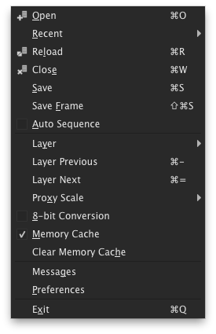
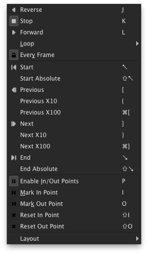

djv_view
Overview
The djv_view application provides real-time image sequence and movie
playback. It is intended as a professional tool for reviewing computer
animation, film, and video footage.
This screenshot shows the main window:
- Menu bar
- Tool bar
- Image view
- Playback controls and information
- Information about the selected pixel
- Information about the current image
- Information about the memory cache
Files
File Formats
For the list of supported file formats see the
image file formats page.
File Sequences
Opening Files
Saving Files
File Layers
Proxy Scaling
Proxy scaling reduces the resolution when loading files to allow more images
to be stored in the memory cache at the expense of image quality. Proxy scaling
can also improve playback speed since the images are smaller.
The proxy scale may be set from the file menu or file preferences.
8-Bit Conversion
This option converts images to 8-bits when loading files to allow more
images to be stored in the memory cache at the expense of image quality.
8-bit conversion may be set from the file menu or file preferences.
Memory Cache
The memory cache allows the application to store images in memory which can
improve playback performance. When the memory cache is disabled the images are
streamed directly from disk.
The memory cache may be enabled or disabled from the file menu or file
preferences. The size of the cache is set in the file preferences. The size
should be set large enough to hold your image sequences and smaller than the
amount of memory in your computer.
The cached images are shown in the playback bar and the state of the
memory cache is shown in the information bar.
File Menu
| | Name | Description | Shortcut |
|---|
|  |
 |
Open |
Open a new file |
Ctrl+O |
|
Recent |
A list of recently opened files |
|
 |
Reload |
Reload the current file |
Ctrl+R |
|
Reload Frame |
Reload the current frame |
Ctrl+Shift+R |
 |
Close |
Close the current file |
Ctrl+W |
|
Save |
Save a copy of the current file |
Ctrl+S |
|
Save Frame |
Save a copy of the current frame |
Shift+Ctrl+S |
|
Auto Sequence |
Automatically detect sequences when opening files |
|
|
Layer |
A list of the layers in the current file |
|
|
Layer Previous |
Go to the previous layer |
Ctrl+- |
|
Layer Next |
Go to the next layer |
Ctrl+= |
|
Proxy Scale |
Set the proxy scale |
|
|
8-bit Conversion |
Enable 8-bit conversion |
|
|
Memory Cache |
Enable the memory cache |
|
|
Clear Memory Cache |
Clear the contents of the memory cache |
|
|
Messages |
Show the message dialog |
|
|
Preferences |
Show the preferences dialog |
|
|
Exit |
Exit the application |
Ctrl+Q |
Windows
Opening and Closing Windows
Resizing Windows
Full Screen Mode
Window Controls
Window Menu
| | Name | Description | Shortcut |
|---|
 |
|
New |
Create a new window |
Ctrl+N |
 |
Copy |
Copy the current window |
Ctrl+C |
 |
Close |
Close the current window |
Ctrl+E |
 |
Fit |
Resize the window to fit the image |
F |
|
Full Screen |
Show the window full screen |
U |
|
Show Controls |
Set whether the tool bars, playback bar, and information bar are
visible |
C |
|
Show Tool Bars |
Set whether the tool bars are visible |
|
|
Show Playback Bar |
Set whether the playback bar is visible |
|
|
Show Information Bar |
Set whether the information bar is visible |
|
Views
View Navigation
Grid
Heads Up Display (HUD)
View Menu
| | Name | Description | Shortcut |
|---|
 |
|
Left |
Move the view left |
Left Arrow |
|
Right |
Move the view right |
Right Arrow |
|
Up |
Move the view up |
Up Arrow |
|
Down |
Move the view down |
Down Arrow |
|
Center |
Center the view |
Insert |
 |
Zoom In |
Zoom into the view |
= |
 |
Zoom Out |
Zoom out of the view |
- |
 |
Zoom Reset |
Rest the zoom |
0 |
|
Reset |
Reset the position and zoom |
Delete |
 |
Fit |
Fit the image to the view |
Backspace |
|
Grid |
Set the grid overlay |
|
|
HUD |
Toggle the HUD (Heads Up Display) |
H |
Images
Frame Store
Image Transforms
Color and Display Profiles
Image Channels
Image Menu
| | Name | Description | Shortcut |
|---|
 |
|
Show Frame Store |
Show the currently loaded frame store |
E |
|
Load Frame Store |
Load the current image into the frame store |
Shift+E |
|
Mirror Horizontal |
Mirror the image horizontally |
F1 |
|
Mirror Vertical |
Mirror the image vertically |
F2 |
|
Scale |
Set the image scale |
|
|
Rotate |
Set the image rotation |
|
|
Color Profile |
Set whether the image color profile is enabled |
|
|
Show Display Profile |
Show the image display profile settings |
|
|
Display Profile |
Set the current image display profile |
|
|
Channel |
Set which image channels are visible |
|
Playback
- Playback controls: reverse, stop, and forward
- Playback shuttle wheel
- Frame controls: start, previous, next, and end
- Frame shuttle wheel
- Frame slider
- Playback speed
- Real playback speed
- Set whether every frame is played back
- Set the loop mode
- Enable in/out points
- Current frame
- Set or reset the in point
- Start frame
- End frame
- Set or reset the end point
- Playback duration
Playback Controls
Frame Controls
In and Out Points
Playback Speed
Playback Layout
Frames and Timecode
Playback Menu
Playback Menu
| | Name | Description | Shortcut |
|---|
|  |
 |
Reverse |
Start reverse playback |
J |
 |
Stop |
Stop playback |
K |
 |
Forward |
Start forward playback |
L |
|
Toggle Playback |
Toggle playback |
Space |
|
Loop |
Set the playback loop mode |
|
 |
Every Frame |
Set whether every frame is played back |
|
 |
Start |
Go to the start frame or in point |
Home |
|
Start Absolute |
Go to the start frame |
Shift+Home |
 |
Previous |
Go to the previous frame |
[ |
|
Previous X10 |
Go backwards 10 frames |
{ |
|
Previous X100 |
Go backwards 100 frames |
Ctrl+{ |
|
Next |
Go to the next frame |
] |
|
Next X10 |
Go forward 10 frames |
} |
|
Next X100 |
Go forward 100 frames |
Ctrl+} |
 |
End |
Go to the end frame or out point |
End |
|
End Absolute |
Go to the end frame |
Shift+End |
 |
Enable In/Out Points |
Set whether in/out points are enabled |
P |
 |
Mark In Point |
Set the current frame as the in point |
I |
|
Mark Out Point |
Set the current frame as the out point |
O |
 |
Reset In Point |
Reset the in point |
Shift+I |
 |
Reset Out Point |
Reset the out point |
Shift+O |
|
Layout |
Set the playback bar layout |
|
Tools
Magnify
This tool provides image magnification.
- Magnification view
- Magnification slider
- Set whether the color profile is enabled
- Set whether the display profile is enabled
Color Picker
This tool provides color picking.
- Color swatch
- Color sliders
- Pixel information and lock
- Color picker sample size
- Set whether the color profile is enabled
- Set whether the display profile is enabled
Histogram
This tool provides an image histogram.
- Histogram view
- Minimum pixel value
- Maximum pixel value
- Histogram size
- Set the pixel mask
- Set whether the color profile is enabled
- Set whether the display profile is enabled
Information
This tool provides image information.
- File name
- Current file layer
- Image size and aspect ratio
- Pixel information
- Time information
- Image tags
Tools Menu
| | Name | Description | Shortcut |
|---|
 |
 |
Magnify |
Toggle the magnify tool |
1 |
 |
Color Picker |
Toggle the color picker tool |
2 |
|
Histogram |
Toggle the histogram tool |
3 |
 |
Information |
Toggle the information tool |
4 |
Command Line
Usage:
djv_view [image]... [option]...
Options:
| -combine | Combine multiple command line arguments
into a single sequence. |
| -seq, -q (value) | Set command line file sequencing. Options =
Off, Sparse, Range. Default = Range. |
File options:
| -file_seq_auto (value) | Automatically detect
sequences when opening files. Options = False, True. |
| -file_layer (value) | Set the input layer. Default = 0. |
| -file_proxy (value) | Set the proxy scale. Options = None, 1/2,
1/4, 1/8. |
| -file_cache (value) | Set whether the file cache is enabled.
Options = False, True. |
Window options:
| -window_full_screen | Set the window full screen. |
Playback options:
| -playback (value) | Set the playback. Options =
Reverse, Stop, Forward. |
| -playback_frame (value) | Set the playback frame. |
| -playback_speed (value) | Set the playback speed. Options = 1, 3,
6, 12, 15, 16, 18, 23.976, 24, 25, 29.97, 30, 50, 59.94, 60, 120. |
Documentation for image I/O command line options is available
here.
Documentation for general command line options is available
here.
|